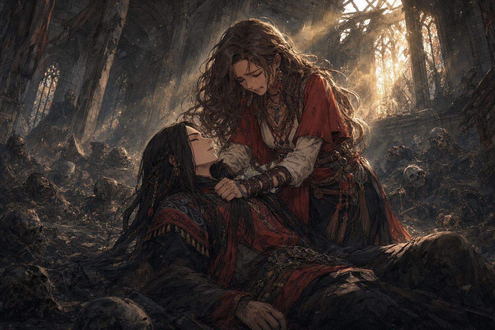
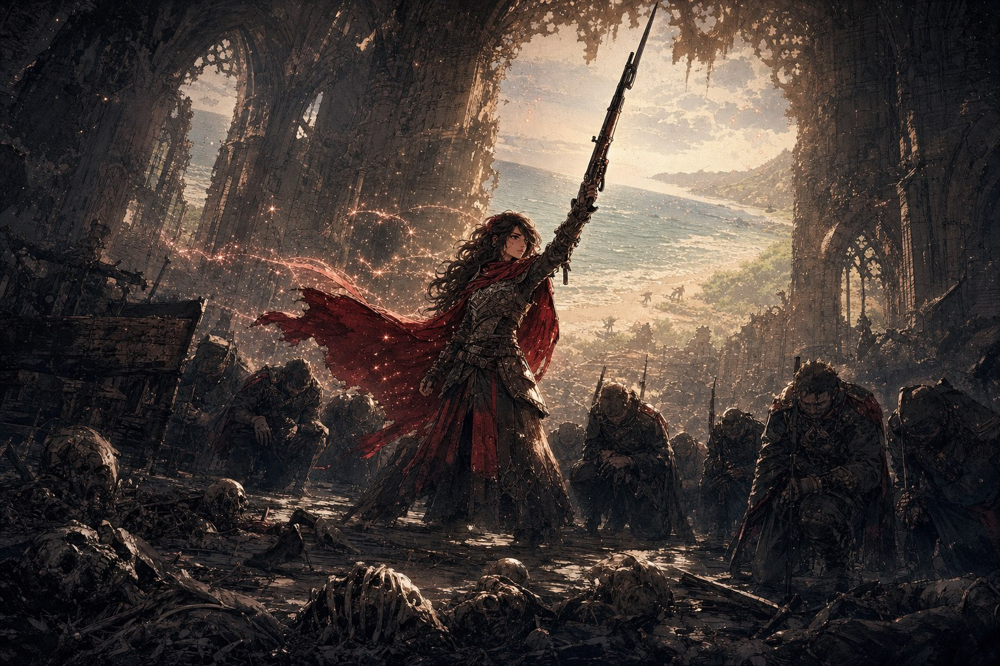

구제국력 848년, 늦가을. 카로지 의원 암살이 실패로 끝난 그 밤으로부터 세 주가 흘렀다. 서쪽 호반을 등지고 동쪽으로 넘어온 군단은 호반 도시의 여관 ‘실버 비’에 여장을 풀었다. 어느새 공기가 차가워져 아침이면 입김이 하얗게 서렸다. 임시 지휘관실에 군단병들이 모였고, 보급관 카를이 새 임무의 브리핑을 시작했다. 아무도 알지 못했다. 이 임무가 끝나기 전에 군단이 사도를 잃고, 또 다른 사도를 얻으리라는 것을.
연기의 교단
카를은 물자 상태를 점검하러 동쪽 호반의 시장에 나갔다가, 여러 시민에게 붙들려 같은 하소연을 들었다. 가족과 친구를 ‘연기의 교단’에 빼앗겼다는 것이었다. 도시를 사실상 손아귀에 쥔 딜루젼은 이 문제를 돌아볼 생각이 없어 보였다. 카를은 물자가 아깝다고 궁시렁거리면서도, 신흥 사교 하나 때문에 언데드가 대량으로 발생하면 결국 군단에도 손해라는 판단으로 조사를 받아들였다. 딜루젼이 움직일 만큼의 정보를 모으면 임무는 성공이었다.
브리핑이 마무리될 무렵, 문 밖에서 병사들이 신원도 묻지 않고 황급히 비켜서는 소리가 들렸다. 문이 열리기도 전에 푸른 숲의 향이 먼저 방 안으로 스며들었다. 피어였다. 그는 방 안의 군단병 한 사람 한 사람과 눈을 맞추며 다정하게 미소 짓고는, 임무의 세부를 짚어 주었다. 교단이 거처로 삼은 낡은 교회의 위치, 옆 상점 지붕에서 예배당 대들보로 오르는 잠입로, 그리고 진상. 사람들은 교도가 신에게 선택받으려 언데드의 고기를 먹는다고 수군댔지만, 사실은 그 반대였다. “안개 교단은 인간이 언데드의 고기를 먹는 게 아니라, 언데드가 인간의 고기를 먹는 곳입니다.” 예배당에는 파열자의 군세가 모여 있고, 노파라 불리는 부관이 의식을 열고 있을 것이라 했다. 큰 소란이 일어나면, 그 틈에 서쪽 계단으로 지하 제단에 내려가라고 그는 일렀다. 피어가 물러가고 얼마 뒤, 글리노어가 허둥지둥 방으로 들어와 말했다. “나도 갈래.” 한때 사도의 자리를 한사코 거부하던 소녀의 입에서 나온, 낯설도록 당찬 말이었다.
임무를 위해 도베르트가 실버 비의 문을 나선 순간, 문 양쪽에서 기다리던 두 사람이 그를 에워쌌다. 대즐링과 포인트블랭크였다. “군단인가? 전할 메시지가 있다.” 말이 끝나기 무섭게 권총과 나이프가 어깨와 다리를 겨눴다. 그러나 도베르트는 기습에도 흔들리지 않았고, 은빛 사붓한 바람이 한 발을 대신 막아 냈다. 잠깐의 접전 끝에 대즐링은 미끄러지듯 물러나 옷깃을 털었다. “좋아. 이 정도 해두지. 무승부로 하지.” 포인트블랭크는 여전히 “죽이겠다”며 이를 드러냈지만, 대즐링은 그를 무시하고 사정을 늘어놓았다. 두 사람은 바흐자릴에게 해고당한 처지였다. 군단을 서쪽 호반으로 데려온 죄, 카로지를 죽이지 않은 죄였다. 카로지가 스파크의 암살 시도를 신문에 폭로하는 바람에 바흐자릴은 곤경에 빠졌고, 정문은 완전히 닫혀 난민도 상인도 드나들 수 없게 되었다. 입막음을 피해 동쪽으로 흘러온 대즐링은 이제 딜루젼에게 붙을 생각이었다. “하하. 그럼. 또 보는 일은 없도록 하자고.” 도시가 아니면 살아갈 수 없는 자들이었다. 두 사람은 각자의 길로 어둠 속으로 사라졌다.
교회, 그리고 지하
군단병들은 피어가 일러 준 대로 무너져 가는 교회의 대들보 위로 소리 없이 올라섰다. 밖에는 사람처럼 어슬렁거리는 언데드가 수십, 안에는 피 위에 피를 덧칠하고 시체 위에 시체를 쌓아 썩힌 냄새가 자욱해 숨 한 번 쉴 때마다 속이 뒤집혔다. 제단에는 죽은 동료 마녀들의 두개골로 몸을 치장한 노파가 앉아 의식을 시작하고 있었다. 그때 정문이 삐걱 열리며 풀과 나무의 향이 밀려들었다. 피어가 들어선 것이었다. 그가 말한 ‘소란’이란 곧 사도 자신이 부관을 상대하러 온다는 뜻이었다. 노파가 뱀 같은 목소리로 외쳤다. “사도다! 죽여!” 피어가 왼손을 들자 교회 바닥에서 가시 돋친 식물이 솟아 언데드를 꿰뚫었고, 덩굴이 저주병들을 묶어 찢었다. 노파가 두개골을 총알처럼 쏘아 보내도 이미 자라난 식물이 모두 막아 냈다. “너는 땅이 없어지면 싸우지 못하겠군.” 노파의 도발에 피어는 조금도 흔들리지 않고 대답했다. “그럴까요.” 그가 두 손을 땅에 대자 양옆에서 늑대 두 마리가 꽃이 피듯 자라났다. 그 싸움을 엄호 삼아, 부서진사자대의 신병들, 알리 프레야비치와 올리버 자작과 세네하 카트리와 말렉세이 그린과 블랙샷이 도베르트와 바람을 따라 지하로 향하는 계단으로 스며들었다.
노파는 궁지에 몰리자 마지막 수를 두었다. 보석 박힌 단검을 뽑아 제 입을 관통시켜 뒷목으로 빼내고는, 컥컥대면서도 웃었다. 목에서 검고 푸른 안개가 피어올랐고, 그 신호에 맞춰 남쪽 대들보에 쓰러진 척 엎드려 있던 저주병들이 숨겨 둔 라이플을 꺼내 들었다. 언데드라기보다 훈련받은 인간처럼 일사불란한 움직임이었다. 그들이 일제히 방아쇠를 당기자, 검붉은 궤적을 그리는 탄환이 피어를 향해 날아갔다. 피어는 사방에 식물의 벽을 세워 몸을 가렸다. 궤적은 잠시 공중에 머물다 연기처럼 흩어졌으나, 피어의 뺨에는 일자로 상처가 그어져 있었다. 그는 비틀거리며 한 발 물러섰다. “여기는 괜찮습니다. 빨리 가십시오. 저를 믿으세요.” 그 상처의 정체를 아무도 알지 못했다.
지하로 내려간 군단병들을 기다린 것은 낙뢰병으로 가득한 스물다섯 걸음의 복도였다. 복도 끝에는 온몸에 금빛 상처를 두른 자가 홀로 서서 머리를 감싸 쥔 채 괴로워하고 있었다. 벼락이었다. 생전 그는 제 의지와 상관없이 벼락을 부르는 몸으로 태어난 파냐인이었다. 곁의 사람을 지키기는커녕 파멸로 이끄는 체질 탓에 마을에서 마을로 쫓겨 다녔고, 끝내 모든 사람을 저주하며 죽었다. 죽어서도 벼락을 부르는 그 시신을 파열자가 거두어 갔다. 그의 마지막 소원은 제 체질이 누군가에게는 도움이 되었으면 하는 것이었다. “그.. 으아아아아아…!” 벼락의 몸에서 터진 빛이 복도의 석상들에 튕기며 그 자리의 모두를 감전시켰다. 한 번, 그리고 또 한 번. 그 광포한 방전 속에서 부서진사자대의 세 신병이 스러졌다. 아카라 피어스를 흠모하던 말렉세이가 먼저 쓰러졌고, 그를 붙들고 울던 블랙샷, 본명 크리스틴 마이오나도 곧 뒤를 따랐다. 그리고 세네하 카트리였다. 기록하기를 좋아하고 지혜를 갈망하던 그 소녀는 마지막까지 온몸을 던져 버텼으나, 끝내 무너지며 젖은 목소리로 중얼거렸다. “사격을.. 배웠어야 했어..!”
부대 다섯 중 셋을 잃은 자리에 무거운 침묵이 내려앉았다. 올리버는 저격수들에게 좋은 라이플을 선물하고 싶었다던 제 순진한 꿈을 읊조리다 끝내 울음을 터뜨렸고, 세네하의 주검에서 좀처럼 발을 떼지 못했다. 알리는 이미 움직이지 않는 동료들 곁에서 아직 끝난 게 아니라는 듯 무어라도 외쳤다. 글리노어는 눈가를 소매로 훔치며 말끝을 삼켰다. “…… 내가 더 강했다면..” 도베르트가 흑색탄으로 남은 낙뢰병들을 정리하고, 마침내 벼락마저 잠재웠다. 그리고 신병들의 어깨를 잡아 제 쪽을 보게 했다. “이 임무를 끝내는 게 전사한 동료들에 대한 마지막 명복이다. 가지.”
이름 없는 신의 두 번째 사도

마음을 추스르고 도착한 유적에서, 도베르트와 바람은 기시감을 느꼈다. 언젠가 라하자르가 의식을 행하며 잿불의 왕의 이름을 처음 알아냈던 바로 그 유적, 그 지하로 이어지는 곳이었다. 마법으로 타오르는 횃불이 넘어져서도 빛을 냈고, 금속과 돌로 부서진 잔해의 날카로운 냄새가 코를 찔렀다. 곧 피어가 남쪽 문으로 걸어 들어왔다. 얼굴과 온몸에 언데드의 피와 체액을 뒤집어썼으면서도, 그가 늘 풍기던 향은 조금도 흐트러지지 않았다. 그는 제단 중앙으로 가 눈을 감았다가, 5초쯤 뒤 눈을 떴다. 그러고는 처음 보는 얼굴로, 입술을 깨물며 당황한 채 말했다. “저는, 이름없는 신의 두 번째 사도였군요.” 다르의 이름 없는 신이 만든 첫 번째 사도는 다르의 소년 세히사 셀리만이었고, 두 번째가 너른들의 용병 아카라 피어스, 곧 자신이었다. “셀리만.. 그가 최초의 타락자입니다.” 그가 조라의 힘을 일부나마 쓸 수 있었던 것은, 조라가 이름 없는 신을 끝내 죽이지 못했기 때문이었다. 피어가 혼란스러운 얼굴로 비틀거리자 글리노어가 달려와 부축했다. “돌아가서 얘기해줘.” 피어는 작게 고개를 끄덕였다. “고맙습니다. 네. 우선 돌아갑시다.”
돌아 나온 예배당에는 노파를 비롯한 모든 언데드가 쓰러져 있었다. 지하와 바깥에 있던 것들까지 죄다 몰려왔다가 피어의 손에 스러진 모양이었다. 피어는 평범한 예배당을 거니는 듯 유해 사이를 한가로이 앞장서 걷다가, 갑자기 한 발 비틀거리더니 그대로 바닥에 쓰러졌다. 입에서 검은 피가 흘렀다. 글리노어가 비명을 지르며 의무병을 찾았지만, 피어는 가만히 눈을 떠 스스로 답을 말했다. “진홍추적탄… 사도를 죽이기 위하여 만들어진 무기입니다.” 교회에서 저를 스친 그 검붉은 궤적이 바로 그것이었다. “저는 신의 힘을 사용하는 자들은.. 예지할 수 없습니다.” 그래서 그는 노파의 저격을 보지 못했고, 슈레야의 죽음도, 이미 사도인 글리노어가 텐트로 달려오던 일도, 오늘 제게 닥칠 이 죽음마저도 내다보지 못했던 것이다. 일으켜 세우려는 글리노어에게 그는 고개를 저었다. “지금이 마지막 기회입니다.”
피어는 마침내, 여태 말할 수 없었던 것들을 털어놓기 시작했다. 글리노어가 태어나 첫 생일을 맞기까지의 1년, 언데드에게 세레나가 목숨을 잃기 전까지, 피어와 세레나와 어린 글리노어는 다르의 마을 바깥 나무집에서 함께 살았다. “그것은 분명, 저의 생에 있어 가장 빛나는 1년이었습니다. 제 삶은 그 1년을 보낸 것으로.. 이미 그 의미를 찾았습니다.” 이모를 죽인 원수에게 복수할 기회라도 달라던 글리노어에게, 피어는 또 하나의 진실을 건넸다. “세런 레이하트는, 제가 피워낸 생명체였습니다. 당신을 아끼고 보살피기 위해서, 쭉 당신 곁에 있기 위해 만들어진.” 세레나가 죽었을 때 누군가는 글리노어를 지켜야 했기에 만든 존재였다고. 미워할 이유마저 잃은 소녀는 옷깃을 붙든 채 울먹였다. “가지 말아줘. 가지마. 이제 나에게 남은건 아무 것도 없단 말이야.”
늦가을 햇살이 깨진 창을 넘어 들어와, 수많은 언데드의 유해와 그 사이에 누운 피어를 자욱한 먼지째 감쌌다. 피어는 조금 전 유적에서 깨달은 마지막 조각을 이었다. 17년 전 세레나에게 나타났던 일디르 사도의 문장이 홀연 사라지고 그날 피어가 사도가 되었으나, 정작 자신은 이름 없는 신의 사도였다. 그렇다면 일디르의 사도는 어디로 갔는가. 사도 계승의 의식이 실패한 것, 예언이 유독 글리노어의 행동만 빗나가던 것, 죽은 자를 멸하는 반역의 힘 포스타니에가 평범한 사람에게 있을 리 없다는 것. 모두가 하나의 답을 가리켰다. “글리노어 레이하트. 당신은 사도입니다.” 세레나 안에 있던 글리노어가 그때 이미 사도가 되었기에, “당신은 태어나기 전부터 사도였던 것입니다.” 그 힘을 사도로서 쓰지 않았기에 아무도 알아채지 못했을 뿐이었다.
피어는 이번 임무에 함께한 이들의 이름을 하나씩 불렀다. 도베르트 다 사니치, 은빛 사붓한 바람, 올리버 자작, 알리 프레야비치, 그리고 지금 여기 없는 세네하 카트리, 말렉세이 그린, 크리스틴 마이오나. 1화에서 그가 처음 군단과 만나던 날 그러했듯이. “미안합니다. 사도로서, 마지막까지 함께 하지 못했습니다.” 그는 품에서 붉은 머플러를 꺼냈다. 망토라기엔 작고 목도리라기엔 큰 천이었다. “글리노어. 당신이 만들어주십시오. 모두가 평화롭게 살 수 있는 세계를 만들어주십시오. 군단병들을 지켜주십시오.” 군단병들에게는 글리노어를 도와 달라 부탁하고, 그는 한결 편안해진 얼굴로 말을 이었다. “저는 쉬겠습니다. 사도의 삶은 영광스러웠습니다. 저는 이제 아카라 피어스로 돌아가고 싶습니다.” 천장 유리 사이로 비친 하늘을 바라보며, 시들어 가는 꽃의 향을 두른 채, 그는 누군가 보이는 것처럼 혼잣말을 뱉었다. “세레나. 내가 원했던건 오직 너와 함께 있는 시간 뿐이었는데. 이제 널 용서할게. 이제 네 곁으로 갈테니까.” 아카라 피어스는 다시 눈을 뜨지 않았다.
다시 불을 붙이겠어

글리노어는 주저앉은 채 오래도록 고개를 떨구고 눈가를 훔쳤다. 울음을 참는 숨소리만이 예배당에 가끔 울렸다. 이윽고 그가 문득 떠오른 듯 입을 뗐다. “내가 한 살 때 죽은 엄마, 나는 잘 몰라. 하지만 피어, 이게 당신의 뜻이라면. 날 받아준 군단병 당신들의 뜻이라면.” 바닥을 짚은 두 손이 주먹으로 쥐어졌다. “해볼게. 나는 변하지 않아. 나는 원래 사도니까. 나는 그대로 나인채로, 운명에 다시 불을 붙이겠어.” 눈물을 짜내 닦고 고개를 든 글리노어가 피어의 손에서 붉은 머플러를 받아 어깨에 둘렀다. 순간 예배당은 여름날의 바닷가로 바뀌었다. 바람 한 점 없는 실내인데도 머플러는 깃발처럼 가볍게 흔들렸고, 나뭇잎 사이로 스미는 햇살처럼 반짝였다. 익어 가는 과일의 단내와 신선한 풀잎의 푸르름, 먼 바다에서 불어오는 짭짤한 바람의 싱그러움이 방을 채웠다. 군단병들의 심장이 두근거렸고, 무엇이든 이겨 낼 수 있을 것 같은 자신감이 솟았다. 사도는 등에 멘 라이플을 검처럼 하늘로 들어 올렸다. 신병들이 저도 모르게 한쪽 무릎을 꿇었다. “사도 레이피어.” 글리노어의 목소리였다. “마지막까지 함께 하겠어.”
군단은 북쪽의 칼리스코 요새를 향해 행군을 시작했다. 차가운 대지 위로 별들이 밤하늘을 가득 메웠다. 대열 맨 앞에서 말을 탄 레이피어의 붉은 머플러가 바닷바람을 받은 듯 가볍게 휘날렸고, 그를 바라보는 군단병들은 겨울 속에서도 여름의 향과 기분 좋은 들뜸을 느꼈다. 한참을 나아가던 레이피어가 문득 대열에서 벗어나 길가에 말을 멈추고, 피어가 잠든 남쪽을 돌아보았다. “엄마가 피어에 대해 남겼던 글이 기억났어. 말해줬으면 좋았을텐데. 아카라 피어스는.. 여름처럼 솔직하고, 겨울처럼 강했다고.” 눈가를 훔치고 다시 말을 몰며, 레이피어는 작게 웃었다. “피어는 분명 알고 있었을테니까. 엄마가 어떤 마음이었을지. 그리고.. 우리가 어떤 일을 겪게 될지.” 즐겁게 웃는 얼굴이 되어 대열의 맨 앞으로 돌아가는 사도 위로, 맑던 하늘이 소리 없이 흰 눈송이를 뿌리기 시작했다. 별빛을 받아 하나하나 반짝이는, 조금 이른 첫눈이었다.